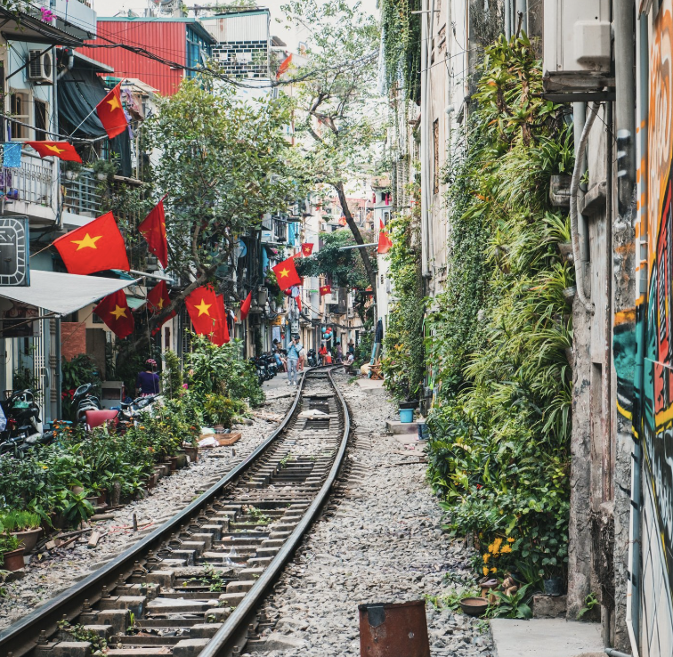
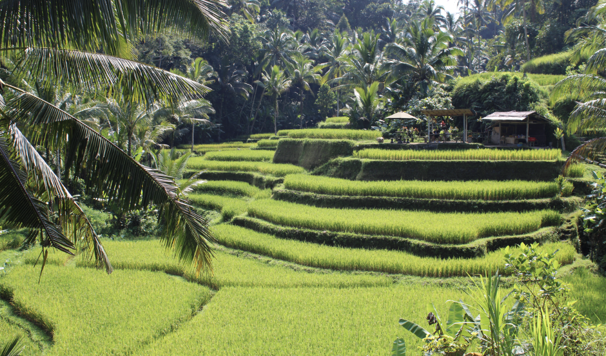
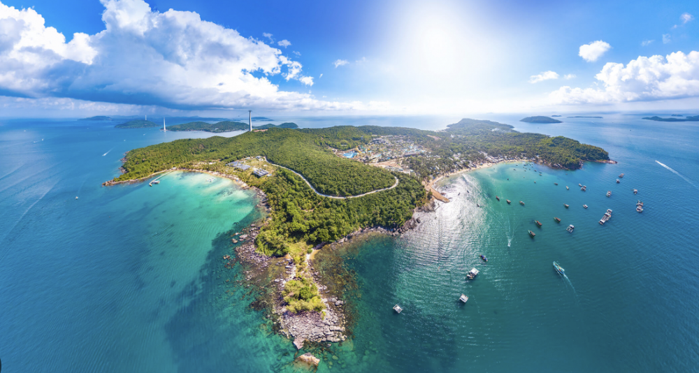
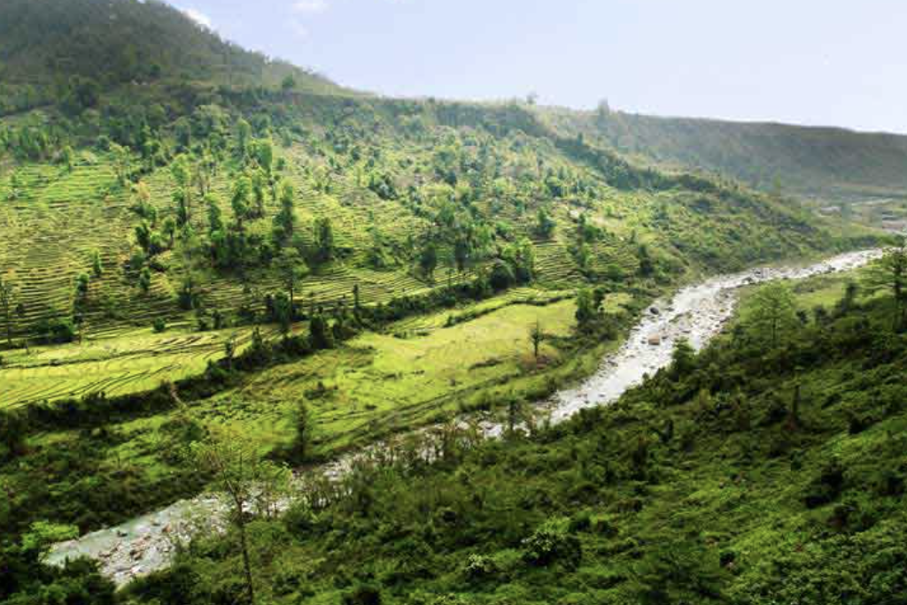
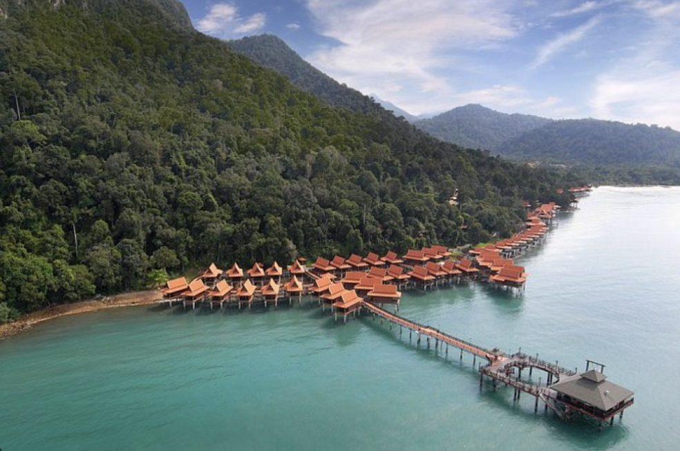
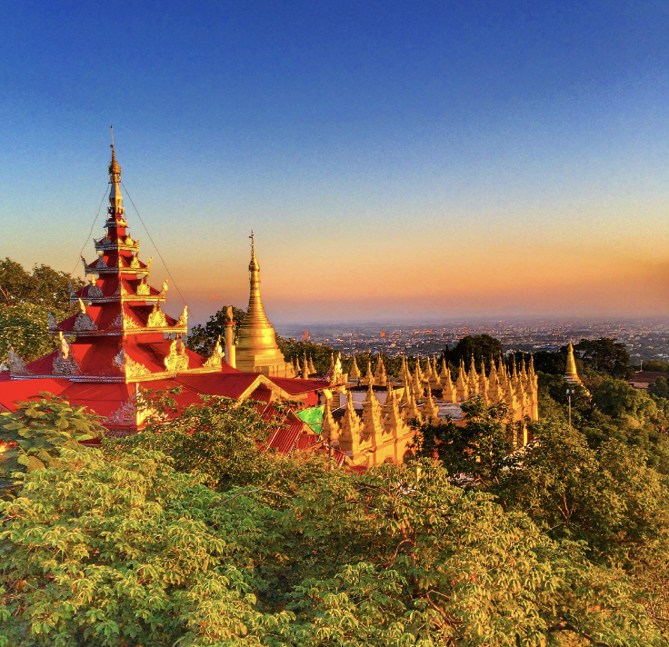
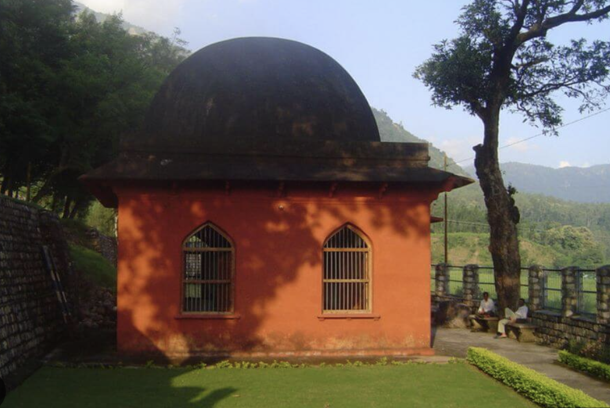
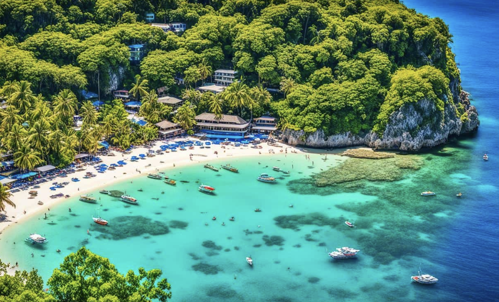
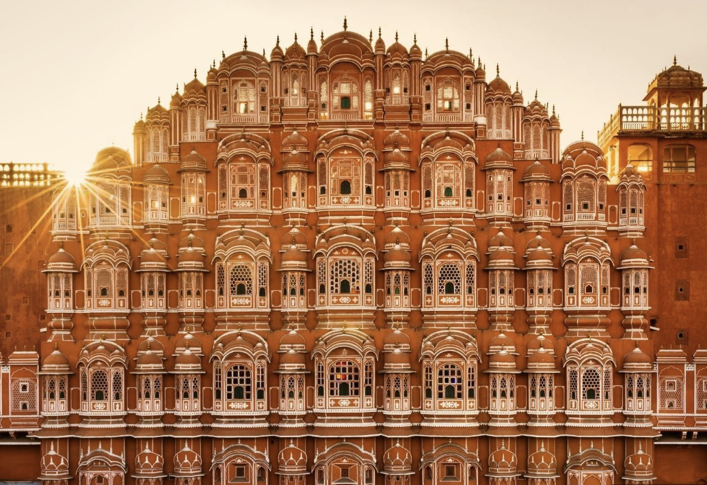
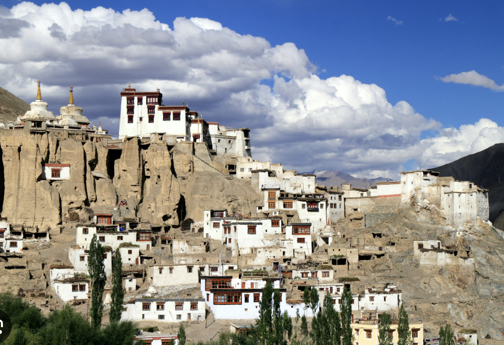

| Beach
|
Cities
|
Countryside
|
Bali Island, Indonesia
- Best things to do: Spend time on the most beautiful beaches on Earth to swimming, surfing and diving; Explore some ancient temples and Visit some famous attractions
- Best time to visit: From April to October when the weather has lots of suns, little rain and low humidity
- Insider’s tip: You should book every service (guide, hotel and car) in advance since from April to October is the peak season
- Recommended duration: 6 - 10 days
Know More about Bali!
|
Hanoi, Vietnam

- Best things to do: Street Food Tour, Hanoi City Tour (Ho Chi Minh Mausoleum, Temple of Literature and Hoa Lo Prison to name a few), Water Puppet Show, Cyclo Tour
- Best time to visit: August to November and February to mid-May – the weather is relatively pleasant with fewer rainfalls
- Insider’s tip: There are plenty of street food restaurants in Hanoi Old Quarter but you should always choose a restaurant that looks clean and hygiene. Since the roads inside Hanoi Old Quarter is rather complicated, you should carry a map with you
- Recommended duration: 2 - 3 days
Know More about Hanoi!
|
Ubud, Bali

- Best things to do: Street Food Tour, Hanoi City Tour (Ho Chi Minh Mausoleum, Temple of Literature and Hoa Lo Prison to name a few), Water Puppet Show, Cyclo Tour
- Best time to visit: August to November and February to mid-May – the weather is relatively pleasant with fewer rainfalls
- Insider’s tip: There are plenty of street food restaurants in Hanoi Old Quarter but you should always choose a restaurant that looks clean and hygiene. Since the roads inside Hanoi Old Quarter is rather complicated, you should carry a map with you
- Recommended duration: 2 - 3 days
Know More about Ubud!
|
Phu Quoc Island, Vietnam

- Best things to do: Explore Phu Quoc National Park, Relax on the beach, Have fun in Vinpearl Land Phu Quoc, Visit the traditional fishing village and Ho Quoc Temple
- Best time to visit: The recommended time to travel to Phu Quoc is in the dry season, from mid-October and the early of May
- Insider’s tip: If you want to get away from the bustling Duong Dong town, you might want to choose a resort either on the north or the south of Phu Quoc Island
- Recommended duration: 2 - 3 days
Know More about Phu Quoc Island!
|
Bangkok, Thailand
- Best things to do: Explore colourful markets, Shopping and Enjoy the tasty Thai food
Best time to visit: November to early April when the weather is dry and clear
- Insider’s tip: Remember to carry a hotel card whenever you are out of your hotel for travelling. When you want to get back to your hotel, show this card to your driver and he will know where it is
- Insider’s tip: Remember to carry a hotel card whenever you are out of your hotel for travelling. When you want to get back to your hotel, show this card to your driver and he will know where it is
- Recommended duration: 3 - 4 days
Know More about Bangkok!
|
Samsing, West Bengal

- Best things to do: Explore the picturesque tea gardens, visit Rocky Island for nature trails and picnics, and enjoy birdwatching in the lush forests of Neora Valley National Park.
- Best time to visit: October to March when the weather is cool and perfect for sightseeing.
- Insider’s tip: Try to stay at a tea estate bungalow for a unique experience and enjoy the serene morning views.
- Insider’s tip: Try to stay at a tea estate bungalow for a unique experience and enjoy the serene morning views.
- Insider’s tip: Try to stay at a tea estate bungalow for a unique experience and enjoy the serene morning views.
- Insider’s tip: Try to stay at a tea estate bungalow for a unique experience and enjoy the serene morning views.
- Recommended duration: 1–2 days.
Know More about Samsing!
|
Langkawi, Malaysia

- Best things to do: Walk on the Langkawi Sky Bridge, Explore Underwater World Langkawi and Wildlife Park & Bird Paradise, Relax on the beach and Do Diving
- Best time to visit: December to April when the weather is warm and has the bright sunshine
- Insider’s tip: There is no public transport on the island, you are recommended to hike or taxis can be called by phone
- Insider’s tip: There is no public transport on the island, you are recommended to hike or taxis can be called by phone
- Recommended duration: 2 - 3 days
Know More about Langkwai!
| Mandalay, Myanmar

- Best things to do: Explore Mandalay Palace, Visit ancient temples and pagodas, Witness the outstanding sunset and sunrise at the longest and oldest teak footbridge U Bein Bridge
- Best time to visit: November to February when the weather has little rainfall and cool temperatures
- Insider’s tip: You can take direct flights from either Bangkok or Chiang Mai to Mandalay. If you have a short time to discover Myanmar, the recommended advice is spending 2 days in Mandalay and another 2 days in Bagan
- Recommended duration: 2 - 3 days
Know More about Mandalay!
|
Kalsi, Uttarakhand

- Best things to do: Visit the Ashokan Rock Edict, explore the Yamuna River for picnic spots and rafting, and enjoy the lush green surroundings and tranquil environment.
- Best time to visit: March to June and September to November for pleasant weather and outdoor activities.
- Insider’s tip: Pack light but sturdy trekking gear; Kalsi is a great base for exploring nearby Garhwal villages.
- Insider’s tip: Pack light but sturdy trekking gear; Kalsi is a great base for exploring nearby Garhwal villages.
- Recommended duration: 1–2 days.
Know More about Kalsi!
|
|
Boracay, The Philippines

- Best things to do: Take a helicopter tour, Go cliff diving at famous Ariel’s Point, Explore the pristine Boracay beaches, Discover the underwater world with Scuba Diving, Go helmet diving, Get a massage
- Best time to visit: November to April when humidity and rainfall remain low
- Insider’s tip: Please be aware that smoking, drinking and party are banned on White Beach.
- Recommended duration: 3 - 4 days
Know More about Borcay!
| Jaipur, Rajasthan

- Best things to do: Visit Amer Fort, City Palace, and Hawa Mahal; Explore Jantar Mantar and local markets like Johari Bazaar; Enjoy Rajasthani cuisine and cultural performances.
- Best time to visit: October to March when the weather is pleasant and ideal for sightseeing.
- Insider’s tip: Avoid peak hours for sightseeing; auto-rickshaws and private cabs are the best modes of transport.
- Recommended duration: 2–3 days.
Know More about Jaipur!
|
Lamayuru, Ladakh

- Best things to do: Visit the ancient Lamayuru Monastery, explore the "Moonland" landscape, enjoy trekking and stargazing, and experience the serene local culture.
- Best time to visit: May to September when the roads are open and the weather is favorable for travel.
- Insider’s tip: Carry warm clothing regardless of the season; opt for homestays to experience the local lifestyle.
- Recommended duration: 1–2 days.
Know More about Lamayuru!
|